The NetView management console graphically displays systems and networking information provided by the NetView host. This information is displayed as Resource Object Data Manager (RODM) based views and is available only if a conversation is set up between the topology server and the NetView host.
RODM-based views are predefined in RODM or are dynamically built based on definitions in RODM. The Graphic Monitor Facility host subsystem (GMFHS) must be available to display RODM-based views and can include the following views:
RODM-based views contain resources which are defined by the SNA topology manager, MultiSystem Manager, user applications, loader files, and so on.
Network views and the resources displayed in them are defined in RODM. Figure 4 shows a network view.
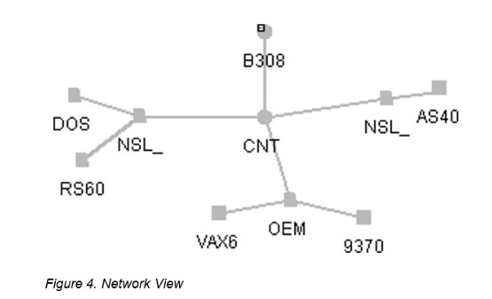
An exception view is a view that typically shows only resources that are not functioning properly, as defined by the exception criteria you defined in RODM. Figure 5 on page 70 shows an exception view.
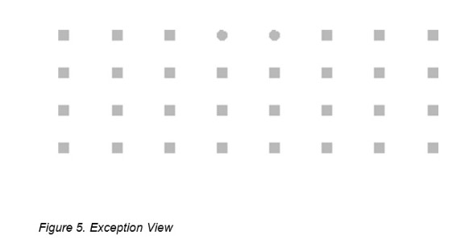
You can request these types of configuration views: parents, children, peers, logical, physical, logical and physical, and backbone. All relationships must have been previously defined in RODM.
Figure 6 displays the configuration of a resource (not the entire connectivity) to its owning node.
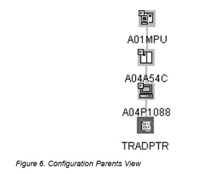
Figure 7 on page 71 shows the selected resource and all of its children.
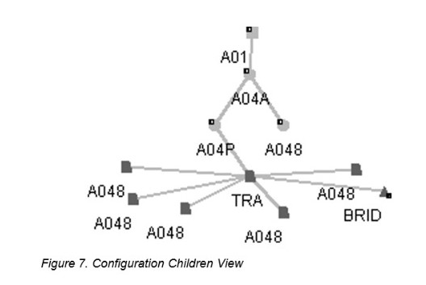
Figure 8 shows a view containing resources in the network that are arranged in a configuration based on a peer relationship between resources.
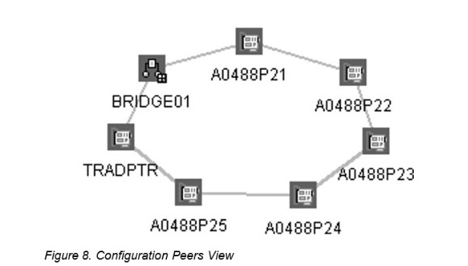
Figure 9 on page 72 shows a view containing resources in the network that are arranged in a configuration based on a logical relationship between resources.
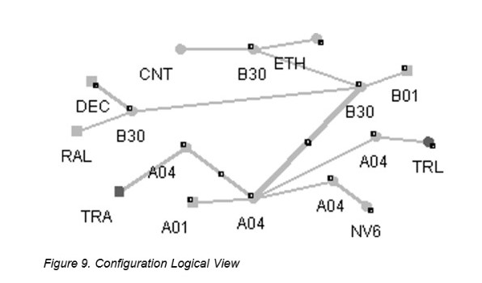
Figure 10 shows a view containing resources in the network that are arranged in a configuration based on a physical relationship between resources.
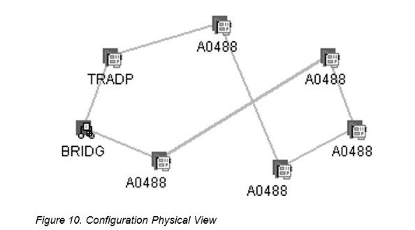
Figure 11 on page 73 shows a view containing resources in the network that are arranged in a configuration based on a logical and physical relationship between resources.
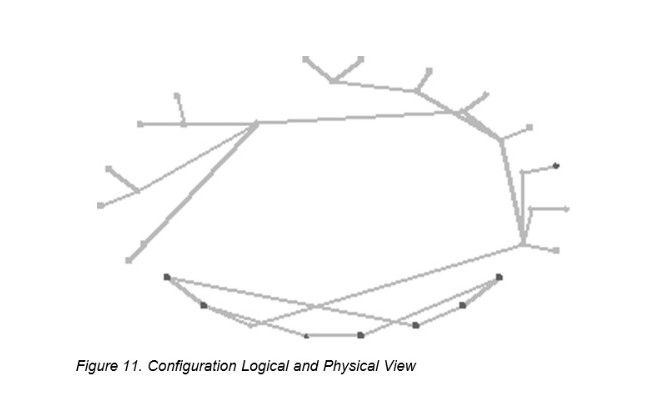
Figure 12 shows a view containing resources in the network that are arranged in a configuration based on a subarea backbone relationship.
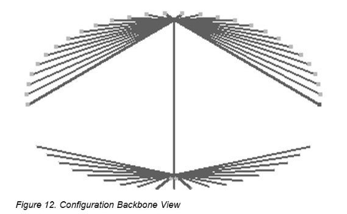
When you request more detail about a selected resource, the view that is displayed shows lower-level resources that are related to the selected resource. You can use the More Detail function to navigate from high-level views to lower-level views. Figure 13 on page 74 shows the contents of a resource, or more details about the resource.
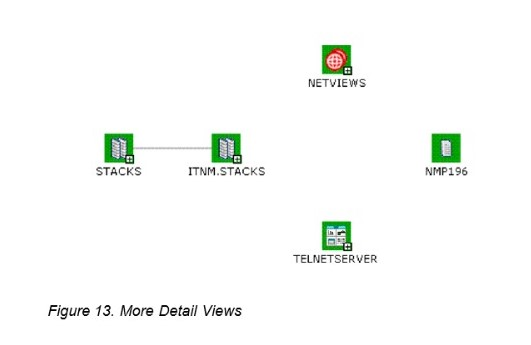
Figure 14 shows a view which was created by selecting Locate Failing Resources on the context menu of an aggregate resource. This view displays all child real resources currently in an exception status.
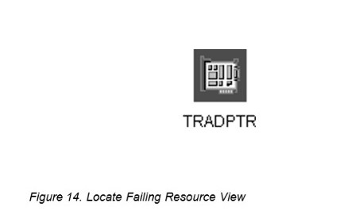
A customized view is a view that has been opened, changed, and saved using the Save View Customization function. You can use this function to save changes to views that are created dynamically in response to certain requests and to predefined RODM-based network views. If you are signed on as administrator, this function is available for the following types of views:
If sign on as administrator, and dynamic views are customized, the Customized Dynamic Views node is displayed in the business tree.
Double-clicking a customized dynamic view in the business tree opens a snapshot of the view, but this snapshot is not an active view with real status and the latest topology changes. You can use it to see how dynamic views have been customized and to change the customization.
Note: Customized network views are shown in the business tree under Network Views.
If you have defined span of control, some views can contain resources that you are not authorized to display because of your span authorization. When this occurs, the view is affected in one of the following ways, depending on your NetView customization:
For more information about span of control, refer to the IBM Tivoli NetView for z/OS Resource Object Data Manager and GMFHS Programmer's Guide.
If you have defined NMCSTATUS policy definitions, a view can contain resources that are suspended from aggregation or are no longer receiving system status updates at the NetView management console. For more information about NMCSTATUS policy definitions, see the IBM Tivoli NetView for z/OS Administration Reference.
A resource that is suspended from aggregation because of a NMCSTATUS policy definition has a textual note attached to the suspend flag indicating why the resource was suspended. The note is displayed when either a Resource Properties or List Suspended Resources request is made.
A resource that is no longer receiving system status updates at the NetView management console topology console has a scheduled system status. The resource continues to receive system status updates in RODM but they are not sent to the NetView management console topology console while the resource is scheduled. As with other system statuses, you can customize the color of the scheduled system status on the Console Properties window.
You can configure the NetView management console topology console to function as a web server. This enables the console to capture Topographic or Details NetView management console views and convert them into HTML and GIF files, which you can view in any web browser.
Note: You can only display views that are open on the console.
If you want information about... Refer to...
Displaying views in a web browser “Configuring a Web Browser to Display Views” on page 18.